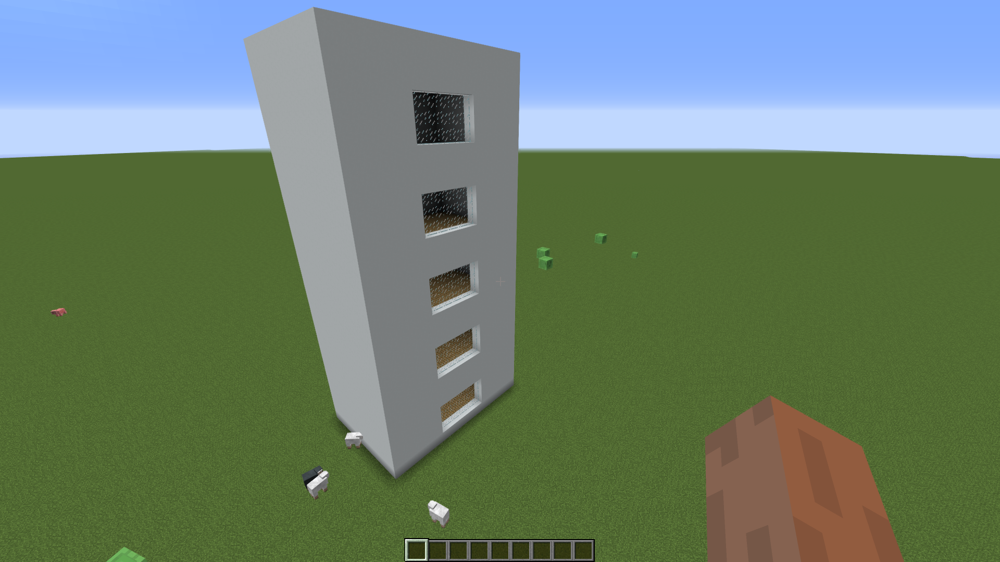

Construct a skyscraper
using PiCraftWith the help of programming we can build entire cities with ease. Writing a program to build structures is a great way to minimize repetitive work while experimenting with different parameters. If you are making a small house odds are that writing a program is inefficient and manually building it will get the job done much faster. However, if you are trying to build a skyscraper which spawns 20 stories high then manually it could take several hours depending on your speed but it will definitely be very boring. Writing code to do the same will take a dozen minutes with the added advantage that making changes will be extremely easy.
To get there first we will start small. In this tutorial we will learn how to build a simple skyscraper.
Our first task is to decide the dimensions and the parameters. Then think of a strategy/algorithm which will do the construction.
makeSkyscraper()
Decide the location for the building
p = getTile()Decide the dimensions and parameters for the building
- floors = 5
- length = 10
- width = 15
- height = 6
Write the pseudo-code/algorithm Pseudo-code means to write informal code rather than actual code which a human can understand. It can be helpful in designing algorithms this way.
x = start_position for i in 1:floors buildFloor(x) increment x's height by floor's height end Build a ceiling for the top floor Now to build a floor 1) Make all the walls out of glass panes 2) Set the bottom level as the flooring block. (Cobblestone for instance) 3) Add pillars to the corners
Let's first define a few basic parameters for our building
p = getTile()
floors = 5length will be in the +ve x direction and width in the +ve z direction
len = 10
width = 15
height = 6We're first going to write code to construct a single floor relative to a point Then we will use a loop to create a skyscraper pseudocode: x = start_position for i in 1:floors buildFloor(x) increase x's height by floor's height end Build a ceiling for the top floor
Now to build a floor
- Make all the walls out of glass panes
- Set the bottom level as floor
- Get Pillars on the corners
function buildFloor(p)
#Set all walls to glass panes
setBlocks(p .+ (1, 0, 1), p .+ (1, height, width), PiCraft.GLASS_PANE)
setBlocks(p .+ (1, 0, 1), p .+ (len, height, 1), PiCraft.GLASS_PANE)
setBlocks(p .+ (1, height, width), p .+(len, 0, width), PiCraft.GLASS_PANE)
setBlocks(p .+ (len, height, width), p .+ (len, 0, 1), PiCraft.GLASS_PANE)
#Set entire floor to Stone Brick
setBlocks(p .+ (1, 0, 1), p .+ (len, 0, width), PiCraft.STONE_BRICK)
#Set 4 Pillars to the corners
setBlocks(p .+ (1, 0, 1), p .+ (1, height, 1), PiCraft.STONE_BRICK)
setBlocks(p .+ (1, 0, width), p .+ (1, height, width), PiCraft.STONE_BRICK)
setBlocks(p .+ (len, 0, 1), p .+ (len, height, 1), PiCraft.STONE_BRICK)
setBlocks(p .+ (len, 0 , width), p .+ (len, height, width), PiCraft.STONE_BRICK)
end
function makeSkyscraper()
for i in 1:floors
buildFloor(p .+ (0, height*i - height, 0))
end
setBlocks(p .+ (1, height*floors, 1), p .+ (len, height*floors, width), PiCraft.IRON_BLOCK) # Set Roof to Iron Block
endExecuting makeSkyscraper() once will construct a building in front of you. Try experimenting around with different dimensions.


makeSkyscraper2()
This building serves as a demonstration of how we can break down a construction task. When programming we will generally have a choice of algorithms/strategies to choose among. In our next example we will choose a different algorithm.
- Decide the location, parameters and dimensions like last time.
p = getTile()- floors = 5
- length = 10
- width = 15
- height = 6
- Pseudocode
- Place a cuboid of blocks on the building space
- Hollow out the inside
- For each floor
- Add flooring
- Add windows
This building isn't particularly nice and has too much glass. Let's have another go. When we use programming to solve a problem there can be multiple solutions to the same problem.
This time let's make the building first and then add windows later
function makeSkyscraper2()Make a filled cuboid of Blocks filling the entire building space
setBlocks(p .+ (1, 0, 1), p .+ (len, height*floors + 1, width),Block(251, 0))Hollow out the inside of the building
setBlocks(p .+ (2, 1, 2), p .+ (len - 1, height*floors, width - 1), PiCraft.AIR)Add wooden flooring
for i in 0:floors
setBlocks(p .+ (2, height*i, 2), p .+ (len - 1, height*i, width - 1), PiCraft.WOOD_PLANKS)
endAdd window Panes, careful if you change the given building dimensions, the change in coordinates may result in unintended consequences.
for i in 0:(floors - 1)
setBlocks(p .+ (1, height*i + 2, floor.((width + 1)/2 - 2)),
p .+ (1, height*i + 4, floor.((width + 1)/2 + 2)), PiCraft.GLASS_PANE)
setBlocks(p .+ (1, height*i + 2, floor.((width + 1)/2 - 2)),
p .+ (1, height*i + 4, floor.((width + 1)/2 + 2)), PiCraft.GLASS_PANE)
end
end
To get better at building you should practice and try new structures and dimensions. Make your building beautiful by experimenting with a variety of different colored blocks and parameters. You can find a list of challenges below.
In our second iteration we made the building better, the code is easier to follow through and is less in comparison. Now, experiment with writing your own code architecturing your own designs. Check out the challenges listed below Challenges :
- Make the building well lit with torches
- Add a balcony to each floor.
- A common ladder access for all floors.
- Add randomness to your design Hint: for all blocks in building if block is cobblestone and rand() < 0.1 set block to Mossy Cobblestone
- Try constructing a building with the "setback" design in mind. Given below is a documentary on how the setback principle came about.

This page was generated using Literate.jl.